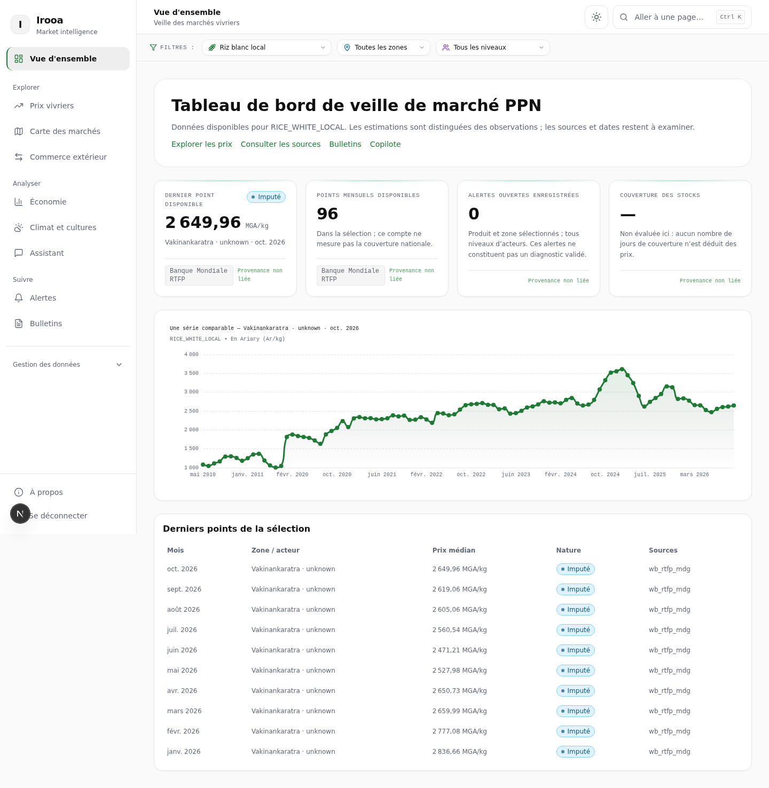

Lire les marchés vivriers.
Rendre les limites visibles.
Un prototype pour examiner une série de prix, son périmètre et la nature de ses valeurs, puis préparer un pilote métier à Madagascar.
1. Le besoin et le point de départ
Présenter le problème : pouvoir examiner les informations sur les produits vivriers dans un même espace, avec leurs dates, leurs unités et leurs limites.
2. Une série de prix dans son contexte
Ouvrir l’accueil, montrer le riz blanc local, la zone, la date et le graphique. Expliquer que le périmètre affiché ne correspond pas à une couverture nationale.

3. Expliquer ce que la donnée représente
Faire défiler le tableau de l’accueil. Montrer la mention « Imputé » et les métadonnées disponibles. La provenance complète est en cours de qualification ; ne pas transformer un identifiant de source en garantie de vérification.
Revenir à l’accueil ↗4. Du prototype à un pilote mesurable
Ce qui est montré
Une interface fonctionnelle, des séries accessibles par API, un graphique et des informations explicites sur la nature des valeurs disponibles.
Le prochain jalon proposé
Choisir un cas d’usage avec un partenaire métier, qualifier les données nécessaires et mesurer l’utilité du parcours. Aucun pilote client n’est annoncé comme signé.